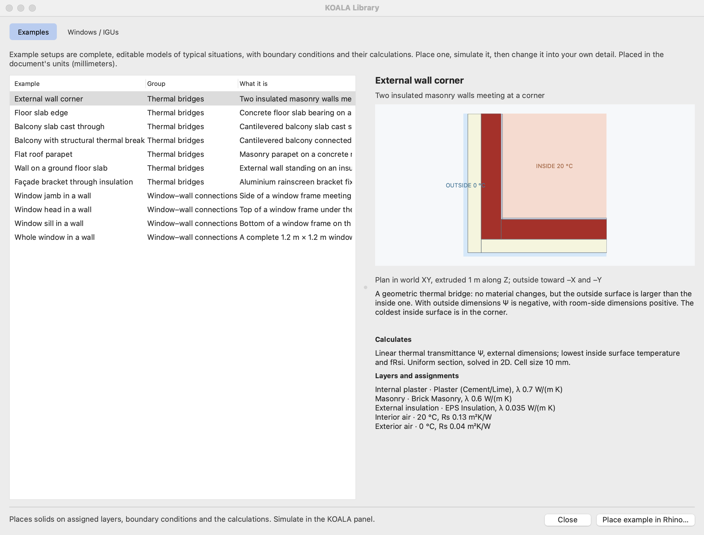
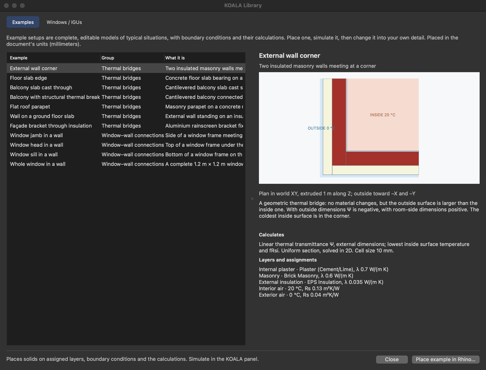

Example setups
Thermal bridge and window-in-wall examples from the shared Rhino Library.
On this page
Choose Library… in the KOALA panel's toolbar, then the Examples tab, or run KoalaExamples to open that tab directly. The library is modeless and belongs to its Rhino document.
An example setup is a complete, editable model of a typical situation: constructions, boundary conditions and the calculations that belong to it. Place one, simulate it, then change it into your own detail. Browsing creates no Rhino objects and runs no simulation.
The library's Windows / IGUs tab has the glazing units, with or without their frame, to place in a model of your own. See window components.
 
Thermal bridges
| Example | Result | Model |
|---|---|---|
| External wall corner | Ψ | Plan in XY, extruded 1 m along Z |
| Floor slab edge | Ψ | Section in XZ, extruded 1 m along Y |
| Balcony slab cast through | Ψ | Section in XZ |
| Balcony with structural thermal break | Ψ | Section in XZ |
| Flat roof parapet | Ψ, wall and roof subtracted | Section in XZ |
| Wall on a ground floor slab | Ψ, wall and ISO 13370 floor subtracted | Section in XZ with 10 m of soil |
| Façade bracket through insulation | χ per bracket | 3D, one 0.6 m × 0.6 m bay between symmetry planes |
The wall of the section examples is 160 mm EPS, 240 mm masonry and 15 mm plaster, with 20 °C inside and 0 °C outside. Flanking constructions are 1.25 m long, which meets the cut-off rule of ISO 10211 7.2.2. The outside is toward −X.
Every solid of these examples is ordinary Rhino geometry on an ordinary assigned layer. The example's calculation is in Bridge Analysis…, where its lengths and U-values can be inspected and changed. Those lengths are stored as numbers and do not follow later edits of the geometry: update them when you change where the model is cut or how thick a construction is.
The dimensions and materials are generic and illustrative: a starting point to edit, not a certified detail. The structural thermal break of the balcony example is one solid with an equivalent conductivity of 0.15 W/(m K) for the whole element, a placeholder: put in the λeq the manufacturer states for the type, height and load class you use. To see the heat flow through individual bars, model them as solids in 3D, as in ValidationData/3DTestCase_Balcony.3dm.
The ground floor example
The floor is 4 m wide between its edges (B′ = 4 m), so the model holds 2 m of floor and, as ISO 10211 asks for floors on the ground, 2.5 B′ = 10 m of soil beside the building and below the floor. Its Ψ is the model's heat flow less the wall, traced from the model, and less the floor, whose U-value is calculated with ISO 13370 for a slab on the ground and stored as an entered value with its source. It is stated with room-side dimensions only. The value belongs to this floor width: for another, change the floor's length in the model and its entered U-value together. Surface resistances are those of the model's boundary conditions.
The bridges form itself does not derive ground U-values; other ground junctions need the same kind of entered reference.
Window–wall connections
| Example | Result | Model |
|---|---|---|
| Window jamb in a wall | Uf, Ψg, installation Ψ | Cut in XY, extruded along Z |
| Window head in a wall | Uf, Ψg, installation Ψ | Cut in YZ, extruded along X |
| Window sill in a wall | Uf, Ψg, installation Ψ | Cut in YZ, extruded along X |
| Whole window in a wall | Uw, heat flow of the installed window | 3D, 1.2 m × 1.2 m |
Choose the frame system and the glazing on the right; the list offers the built-in glazing and the document's WINDOW imports that fit the frame's rebate. The IGU + frame stays a read-only library component in the example. The wall, the installation joint and the boundary conditions are editable solids, and a Supports layer takes what you add: a lintel, a sill board, a roller-shutter box. Select the example's IGU + frame and press Simulate. Window components describes the cases, the inspector and the rules for editing.
Placing
Select an example, choose Place example in Rhino… and click an insertion point. The example gets one grouping layer with a child layer per material and boundary condition, in the document's units.
A study solves everything on assigned layers together. Place one example per document, or expect it to be solved with whatever else the document holds; the browser asks before adding an example to a document that already has a model. Placing the same thermal bridge twice adds a second calculation.